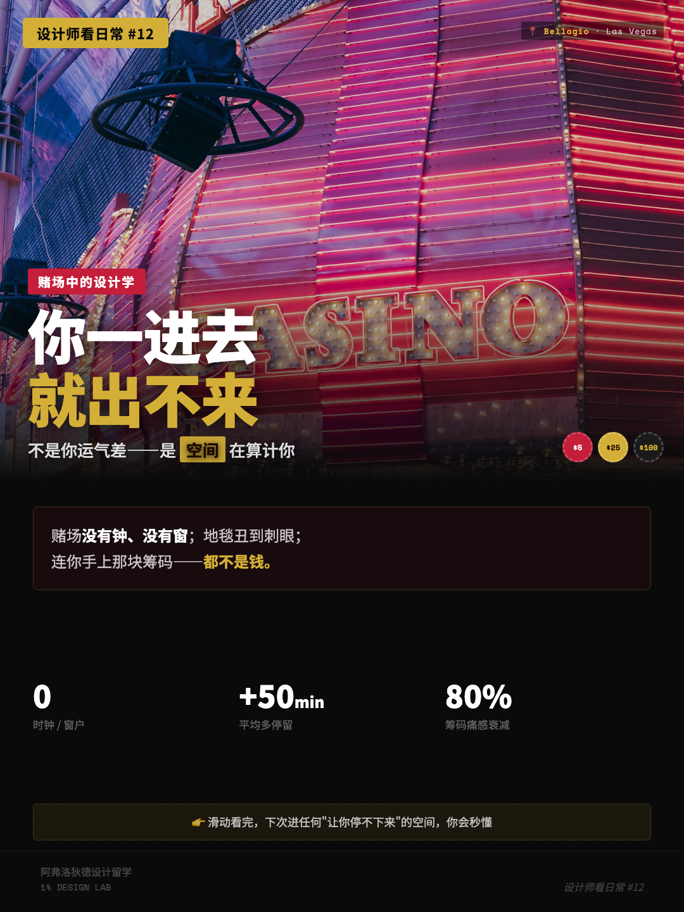
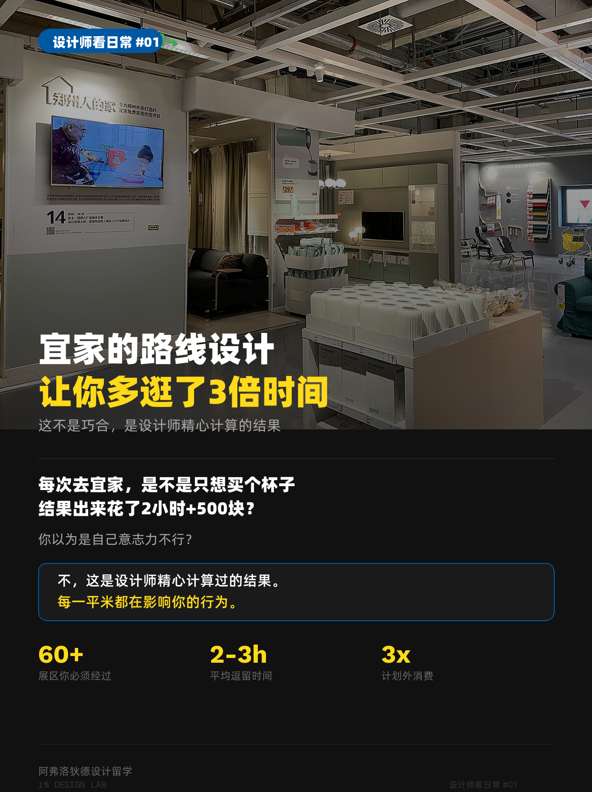

Joey Zhao 的独立笔记
关于设计
与产品交付的笔记。
这里不写“设计很重要”。我会拆开一个已经上线的界面、一把快餐店的椅子、一次失败的 AI 生成，说明当时看见了什么、做了什么取舍，以及哪些结论仍然不能下。
AI 产品B2B 系统Build in Public设计观察
AI-generated concept art
精选文章 · AI 产品
AI 时代，设计师不能只卖页面
我把三个真实项目摆在一起复盘：AI 能快速补齐页面之后，设计师仍要为失败路径、证据边界、商业取舍和上线后的后果负责。
阅读全文 →最新文章
01空间心理学
12 分钟阅读 02零售动线
11 分钟阅读 03零售空间
11 分钟阅读 04 照片分析
照片分析
11 分钟阅读 05 Build in public
Build in public
12 分钟阅读 06 通用设计
通用设计
10 分钟阅读 07 职业与手艺
职业与手艺
11 分钟阅读

赌场里没有钟也没有窗，设计师到底在算什么？
拆解时间真空、丑地毯、近失效应、筹码去货币化四套空间手法，以及哪些数字该信、哪些别太当真。
12 分钟阅读 02

宜家为什么让你逛到出不来？
单向动线、样板间情境、峰终定律都是真的。但「多逛 3 倍」「价值感知提升 40%」这种数字，我重新查了一遍。
11 分钟阅读 03
苹果店的门去哪了？
苹果用整面玻璃墙取代了门，把入店阻力压到最低。拆它的入口、橱窗和空间梯度，看能偷多少到数字产品里。
11 分钟阅读 04
麦当劳的座椅，究竟在优化什么？
用香港、澳门、慕尼黑和布达佩斯的门店照片，检验“硬椅赶客”这个流行说法到底漏掉了什么。
11 分钟阅读 05
从一个 Brief 到 11 个平台：我如何设计「一鱼多吃」
真实 Build in Public：我为什么删掉假数据、放弃聊天框，并把模型失败直接暴露给用户。
12 分钟阅读 06
电梯里的镜子，最重要的用途不是照脸
从深圳一栋老写字楼出发，逐条核对等待心理、空间感、安全视野与轮椅倒车这四种解释。
10 分钟阅读 07
作品集不是仓库，而是思维方式的证据链
直接拆我的 Signals、UnifyUX 和一鱼多吃：什么算证据，什么只是把项目讲得像成功。
11 分钟阅读